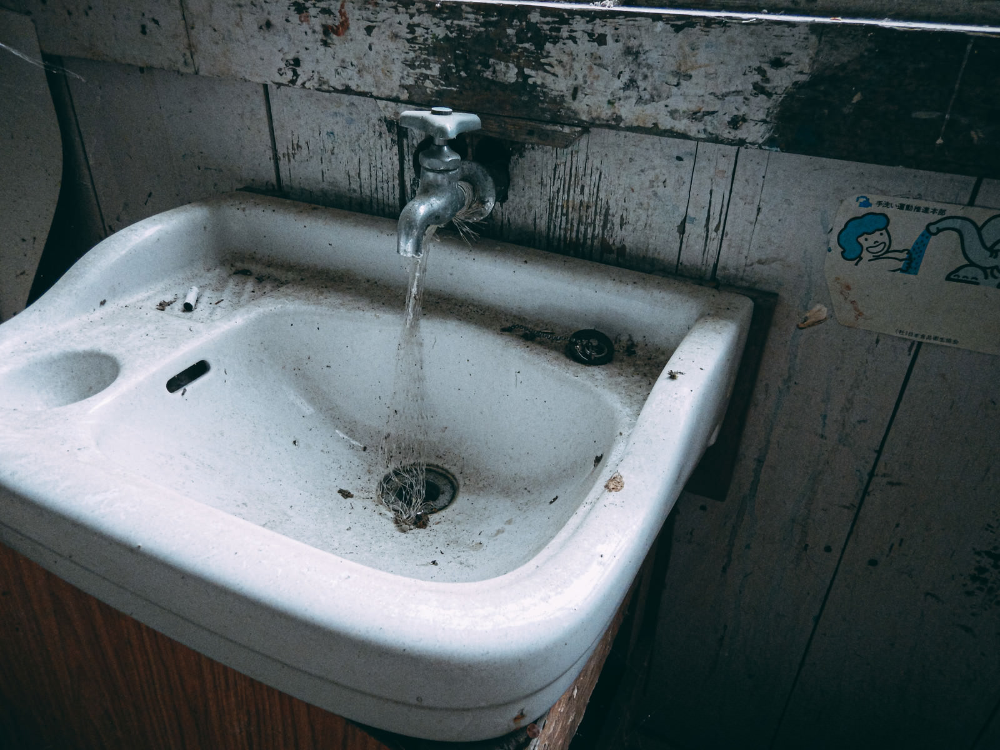
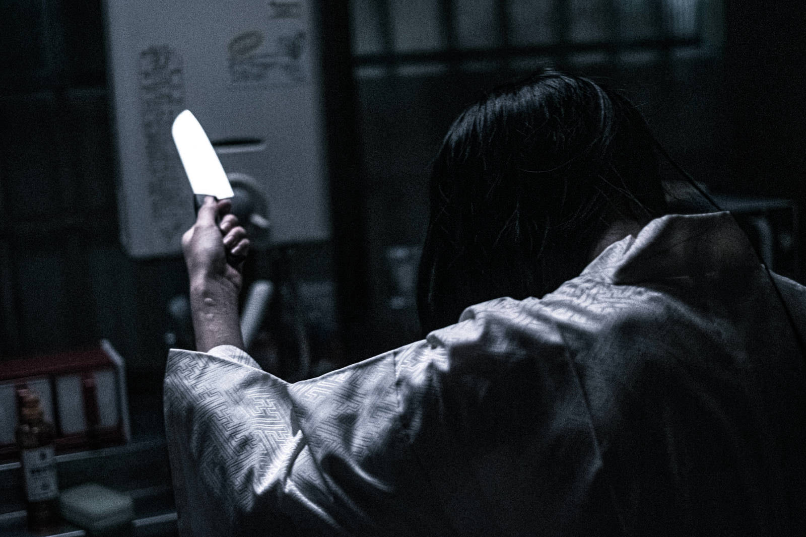

- 誰もいない教室
- 出没場所: E701
概要:7月の蒸し暑い夕方。名城大学の理工学部棟は、講義が終わると同時に急速に静まり返っていた。

- 赤い泡
- 出没場所: 図書館3F女子トイレ
概要: 名城大学の図書館――重たい扉を押すと、すっと空気が冷たくなる。

- そらいろの夜に
- 出没場所: タワー75 そらいろラウンジ
概要: 名城大学のタワー棟最上階にあるレストラン「そらいろラウンジ」。